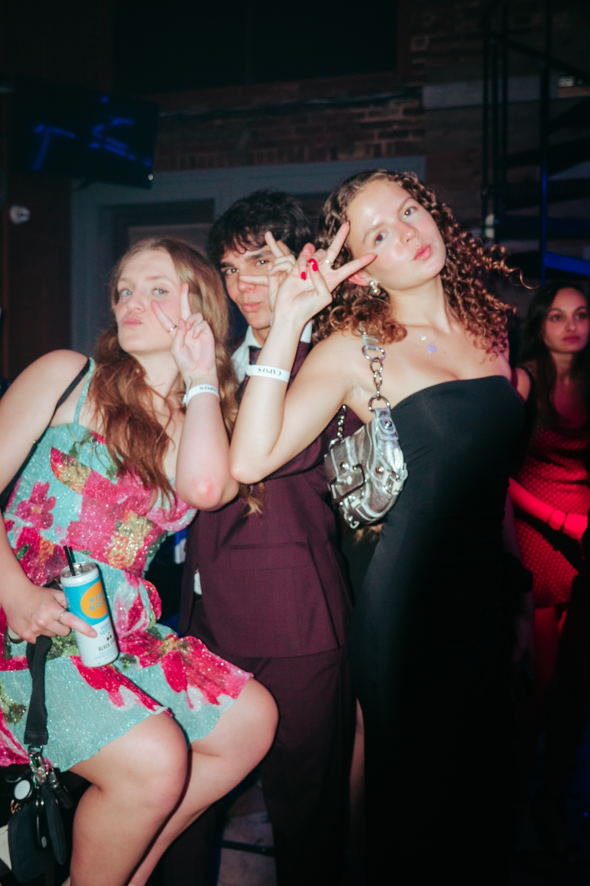
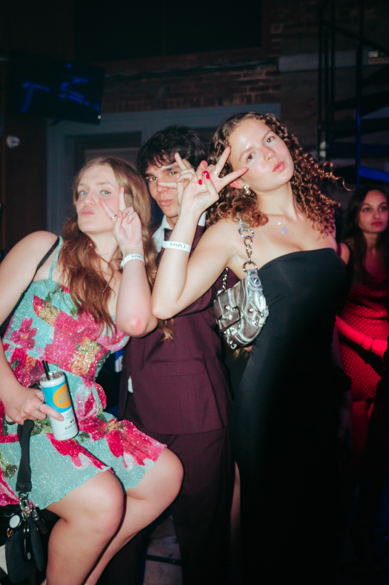

Sororities are, and have been, a prominent form of community in today's college campus. Exclusive and often polarizing depending on whom you talk to, they invite much fascination from students and online media alike. Even with their well-documented flaws, they remain a reliable engine for lifelong friendship, built on sustained in-person time that few other college spaces still offer. In a campus culture increasingly shaped by digital performance, sororities fit right in––yet still provide a structured intimacy that still pulls people into genuine connection.


 
